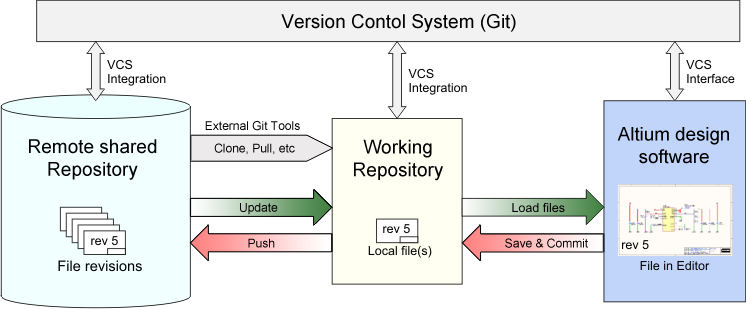
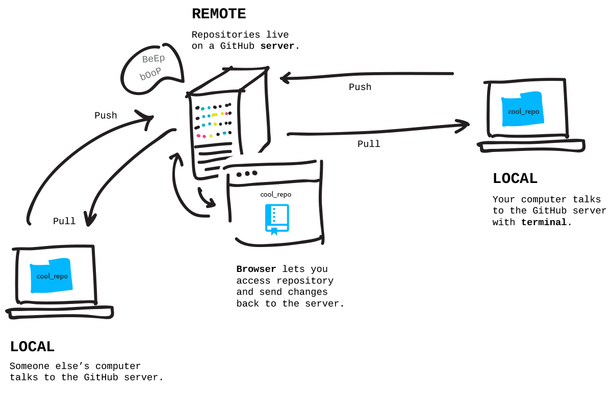

Git is a free, open-source version control software. It was created by Linus Torvalds in 2005. This tool is a version control system that was initially developed to work with several developers on the Linux kernel.
This basically means that Git is a content tracker. So Git can be used to store content — and it is mostly used to store code because of the other features it provides.
Real life projects generally have multiple developers working in parallel. So they need a version control system like Git to make sure that there are no code conflicts between them.
Also, the requirements in such projects change often. So a version control system allows developers to revert and go back to an older version of their code.
The branch system in Git allows developers to work individually on a task (For example: One branch -> One task OR One branch -> One developer). Basically think of Git as a small software application that controls your code base, if you’re a developer.
If we want to start using Git, we need to know where to host our repositories.
A repository (or “Repo” for short) is a project that contains multiple files. In our case a repository will contain code-based files.
There are two ways you can host your repositories. One is online (on the cloud) and the second is offline (self-installed on your server).
There are three popular Git hosting services: GitHub (owned by Microsoft), GitLab (owned by GitLab) and BitBucket. We’ll use GitHub as our hosting service.
Nearly every open-source project uses GitHub to manage their projects. Using GitHub is free if your project is open source, and it includes a wiki and issue tracker that makes it easy to include more in-depth documentation and get feedback about your project.
If you want to contribute, you just fork (get a copy of) a project, make your changes, and then send the project a pull request using GitHub's web interface. This pull request is your way of telling the project you're ready for them to review your changes.
By using GitHub, you make it easier to get excellent documentation. Their help section and guides have articles for nearly any topic related to Git that you can think of.
GitHub can integrate with common platforms such as Amazon and Google Cloud, with services such as Code Climate to track your feedback, and can highlight syntax in over 200 different programming languages.
When multiple people collaborate on a project, it’s hard to keep track of revisions — who changed what, when, and where those files are stored.
GitHub takes care of this problem by keeping track of all the changes that have been pushed to the repository.
Much like using Microsoft Word or Google Drive, you can have a version history of your code so that previous versions are not lost with every iteration. It’s easy to come back to the previous version and contribute your work.
Are you a developer who wishes to attract recruiters? GitHub is the best tool you can rely on for this.
Today, when searching for new recruits for their projects, most companies look at GitHub profiles. If your profile is available, you will have a higher chance of being recruited even if you are not from a great university or college.
To create your account, you need to go to Github 's website and fill out the registration form.
.png)
Now we need to install Git's tools on our computer. We’ll use CLI to communicate with GitHub.
For Ubuntu:
1. First, update your packages.
sudo apt update
2. Next, install Git and GitHub with apt-get
sudo apt-get install git
3.Finally, verify that Git is installed correctly
git --version
Run the following commands with your information to set a default username and email when you’re going to save your work.
git config --global user.name "SHIVAM GUPTA"
git config --global user.email "example@mail.com"
Type 1: Create the repository, clone it to your PC, and work on it.(Recommended)
Type 1 involves creating a totally fresh repository on GitHub, cloning it to our computer, working on our project, and pushing it back.
Create a new repository by clicking the “new repository” button on the GitHub web page
.png)
Pick a name for your first repository, add a small description, check the ‘Initialize this repository with a README’ box, and click on the “Create repository” button.
.png)
Well done! Your first GitHub repository is created.
Your first mission is to get a copy of the repository on your computer. To do that, you need to “clone” the repository on your computer.
To clone a repository means that you're taking a repository that’s on the server and cloning it to your computer – just like downloading it. On the repository page, you need to get the “HTTPS” address.
.png)
Once you have the address of the repository, you need to use your terminal. Use the following command on your terminal. When you’re ready you can enter this:
git clone [HTTPS ADDRESS]
This command will make a local copy of the repository hosted at the given address.
.png)
Now, your repository is on your computer. You need to move in it with the following command.
cd [NAME OF REPOSITORY]
.png)
As you can see in the above picture, my repository name is “My-New-Project” and this command made me go to that specific directory.
NOTE: When you clone, Git will create a repository on your computer. If you want, you can access your project with the computer user interface instead using the above ‘cd’ command on the terminal.
Now, in that folder we can create files, work on them, and save them locally. To save them in a remote place — like GitHub – we have do a process called a “commit”. To do this, get back to your terminal. If you closed it, like I previously stated, use the ‘cd’ command.
cd [NAME OF REPOSITORY]
Now, in the terminal, you’re in your repository directory. There are 4 steps in a commit: ‘status’ , ‘add’ , ‘commit’ and ‘push’. All the following steps must be performed within your project. Let's go through them one by one.
1. “status”: The first thing you need to do is to check the files you have modified. To do this, you can type the following command to make a list of changes appear.
git status
.png)
2. “add”: With the help of the change list, you can add all files you want to upload with the following command,
git add [FILENAME] [FILENAME] [...]
In our case, we’ll add a simple HTML file
git add sample.html
.png)
3. “commit”: Now that we have added the files of our choice, we need to write a message to explain what we have done. This message may be useful later if we want to check the change history. Here is an example of what we can put in our case.
.png)
4. “push”: Now we can put our work on GitHub. To do that we have to ‘push’ our files to Remote. Remote is a duplicate instance of our repository that lives somewhere else on a remote server. To do this, we must know the remote’s name (Mostly remote is named origin). To figure out that name, type the following command.
git remote
.png)
As you can see in the above image, it says that our remote’s name is origin. Now we can safely ‘push’ our work by the following command.
git push origin master
Now, if we go to our repository on the GitHub web page, we can see the sample.html file that we’ve pushed to remote — GitHub!
.png)
NOTE: Sometimes when you’re using Git commands in the terminal, it can lead you to the VIM text editor (a CLI based text-editor). So to get rid of it, you have to type
:q
and ENTER.
Pulling is the act of receiving from GitHub.
Pushing is the act of sending to GitHub.
Type 2: Work on your project locally then create the repository on GitHub and push it to remote.
Type 2 lets you make a fresh repository from an existing folder on our computer and send that to GitHub. In a lot of cases you might have actually already made something on your computer that you want to suddenly turn into a repository on GitHub.
I will explain this to you with a Survey form web project that I made earlier that wasn’t added to GitHub.
As I already mentioned, when executing any Git commands, we have to make sure that we are in the correct directory in the terminal.
By default, any directory on our computer is not a Git repository – but we can turn it into a Git repository by executing the following command in the terminal.
git init
.png)
After converting our directory to a Git repository, the first thing we need to do is to check the files we have by using the following command.
git status
.png)
So there are two files in that directory that we need to “add” to our Repo.
git add [FILENAME] [FILENAME] [...]
NOTE: To “add” all of the files in our Repository we can use the following command:.
git add .
After the staging area (the add process) is complete, we can check whether the files are successfully added or not by executing the git status
If those particular files are in green like the below picture, you’ve done your work!
.png)
Then we have to “commit” with a description in it.
git commit -m "Added 2 files"
.png)
If my repository started on GitHub and I brought it down to my computer, a remote is already going to be attached to it (Type 1). But if I’m starting my repository on my computer, it doesn’t have a remote associated with it, so I need to add that remote (Type 2).
So to add that remote, we have to go to GitHub first. Create a new repository and name it whatever you want to store it in GitHub. Then click the “Create repository” button.
NOTE: In Type 2, Please don’t initialize the repository with a README file when creating a new repository on the GitHub web page.
.png)
After clicking the “Create repository” button you’ll find the below image as a web page.
.png)
Copy the HTTPS address. Now we’ll create the remote for our repository.
git remote add origin [HTTPS ADDRESS]
After executing this command, we can check whether we have successfully added the remote or not by the following command
git remote
And if it outputs “origin” you’ve added the remote to your project.
NOTE: Just remember we can state any name for the remote by changing the name “origin”. For example:
git remote add [REMOTE NAME] [HTTPS ADDRESS]
Now, we can push our project to GitHub without any problems!
git push origin master
After completing these steps one by one, if you go to GitHub you can find your repository with the files!
.png)
Thank you everyone for reading. I just explained the basics of Git and GitHub. I strongly encourage you all to read more related articles on Git and GitHub. I hope this article helped you.
Thank you.